← Index · ← Previous · Next →
Authors: Yu-Ting Lee, Samuel Yen-Chi Chen, Fu-Chieh Chang
Type: theory · Category: quantum information and computing · PDF: https://arxiv.org/pdf/2605.03434v1
Analysis basis: full PDF text, analyzed in chunks
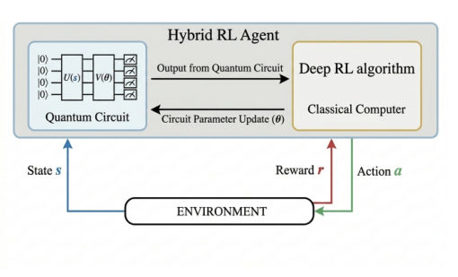
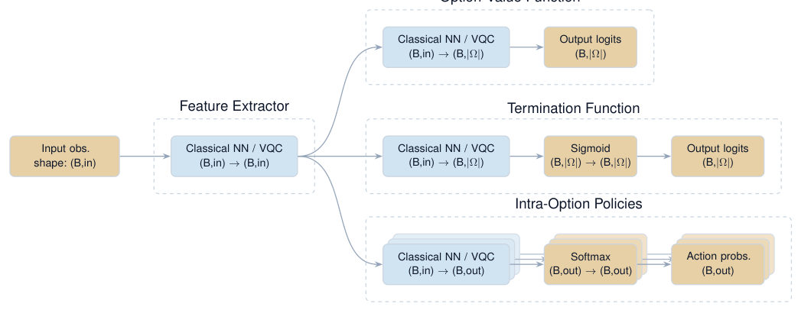
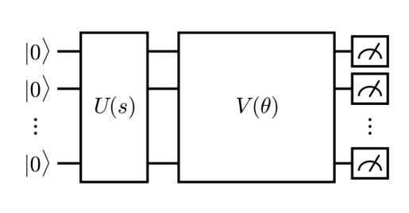
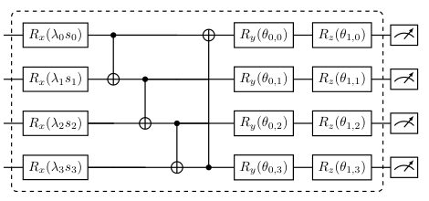
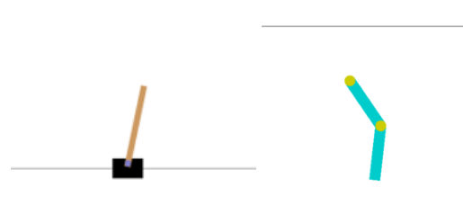
Summary. This paper explores integrating variational quantum circuits into hierarchical reinforcement learning to achieve higher parameter efficiency. It finds that while quantum feature extractors can significantly outperform classical models with fewer parameters, using quantum circuits for value estimation currently acts as a performance bottleneck.
Why it may be interesting. not directly relevant
Main problem. Investigating whether the advantages of Quantum Reinforcement Learning, such as parameter efficiency and expressivity, extend to Hierarchical Reinforcement Learning (HRL) using the option-critic architecture.
Main result. A hybrid agent using a quantum feature extractor outperforms classical baselines while reducing trainable parameters by up to 66%, though using quantum circuits for option-value estimation creates a performance bottleneck.
Method. The authors develop a hybrid quantum-classical option-critic agent that replaces specific classical components with Variational Quantum Circuits (VQCs) using data re-uploading and hardware-efficient ansatz.
Model / system. The study uses a hybrid reinforcement learning framework applied to classical Gymnasium environments, specifically the CartPole and Acrobot tasks, utilizing VQCs for feature extraction, policies, and value functions.
Key observables. Expectation values of Pauli-Z operators, policy entropy, actor loss, and critic loss.
Important parameters / regimes. Circuit depth, learnable input-scaling parameters (lambda), CNOT entanglement, and the number of options.
Assumptions / limitations. The study assumes that classical state observations can be effectively mapped to quantum states via unitary encoding and does not account for hardware noise in the simulations.
Figures summary. Figure 1 shows the hybrid RL paradigm; Figure 2 details the option-critic architecture; Figure 3 illustrates the VQC structure; Figure 6 shows learning curves; Figure 8 provides a diagnostic analysis of the quantum critic failure; Figure 10 shows ablation studies on circuit depth and entanglement.
Paper structure. The paper introduces the problem of quantum HRL, details the hybrid option-critic architecture and VQC implementation, presents experimental results on CartPole and Acrobot, conducts ablation studies on circuit parameters, and discusses identified bottlenecks and future directions.
Reinforcement learning is one of the most challenging learning paradigms where efficacy and efficiency gains are extremely valuable. Hierarchical reinforcement learning is a variant that leverages temporal abstraction to structure decision-making. While parametrized quantum computations have shown success in non-hierarchical reinforcement learning, whether these advantages adapt to hierarchical decision-making remains a critical open question. In this work, we develop a hybrid hierarchical agent based on the option-critic architecture. This hybrid agent substitutes classical components with variational quantum circuits for feature extractors, option-value functions, termination functions, and intra-option policies. Evaluated on standard benchmarking environments, results show that a hybrid agent utilizing a quantum feature extractor can outperform classical baselines while saving up to 66\% trainable parameters. We also identify an architectural bottleneck that quantum option-value estimation severely degrades performance. Further ablation studies reveal how architectural choices of the quantum circuits affect performance. Our work establishes design principles for parameter-efficient hybrid hierarchical agents.
Authors: Wen-Bo Dai, Jinchao Zhao, Shuai A. Chen, K. T. Law
Type: both · Category: disordered systems and neural networks · PDF: https://arxiv.org/pdf/2605.03987v1
Analysis basis: full PDF text, analyzed in chunks
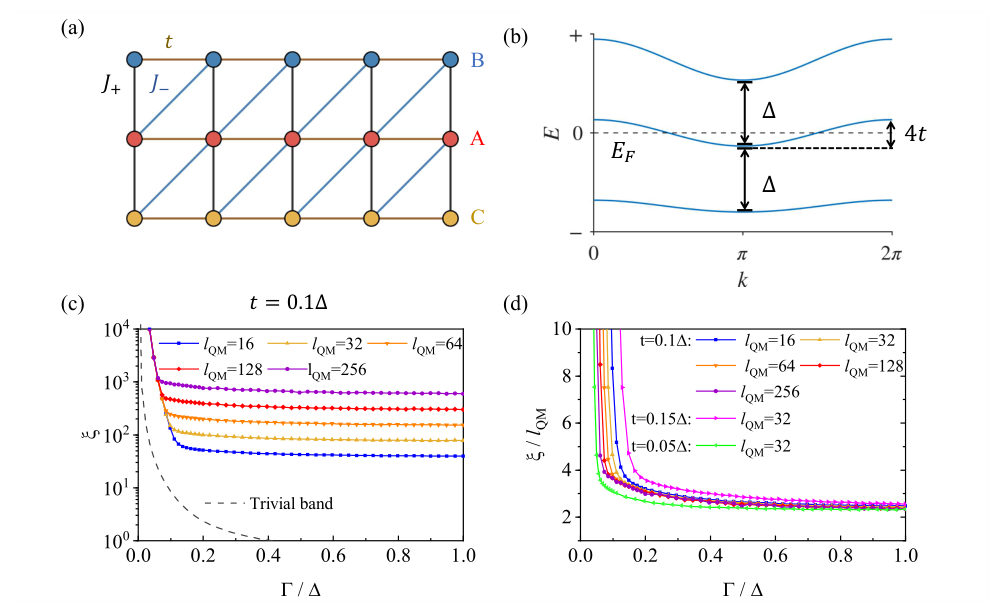
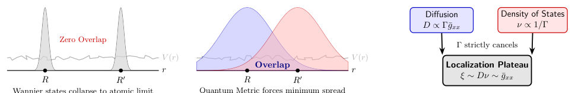
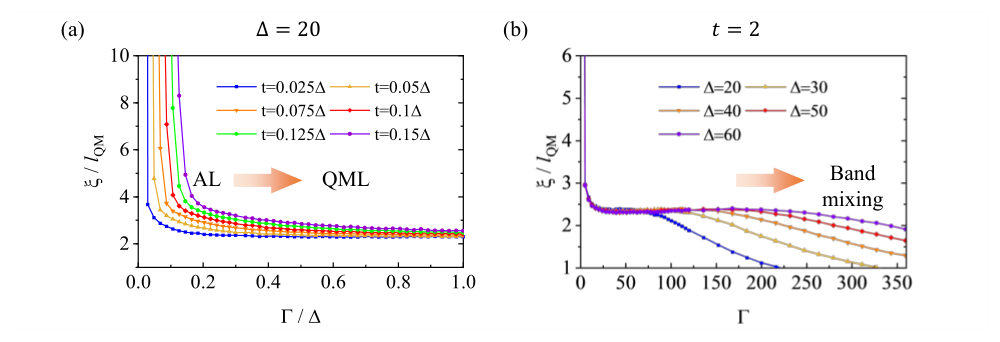
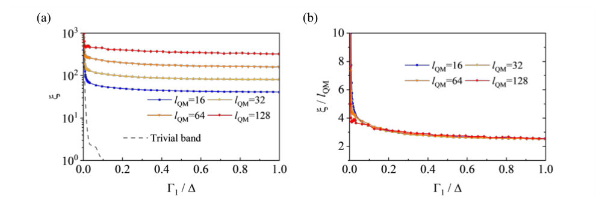
Summary. This paper identifies a new regime of localization where the localization length is determined by the intrinsic quantum geometry of a band rather than the disorder strength. It demonstrates that the quantum metric provides a 'protection' mechanism that keeps the localization length constant even as disorder increases, until the disorder becomes large enough to mix different bands.
Why it may be interesting. not directly relevant
Main problem. The paper investigates how the quantum metric of an isolated band influences electronic localization in the presence of disorder, specifically challenging the standard Anderson localization paradigm.
Main result. The authors discover a 'quantum metric localization' regime where the localization length becomes pinned at a plateau of approximately twice the quantum metric length, providing a form of 'quantum metric protection' against disorder.
Method. The study combines numerical Transfer Matrix Method simulations with analytical approaches, including a physical picture based on Wannier functions and a supersymmetric (SUSY) non-linear sigma model.
Model / system. The primary model is a 1D modified Lieb lattice (applicable to electronic, photonic, and acoustic systems) featuring a central band separated from other bands by a gap $\Delta$, subjected to on-site Anderson disorder.
Key observables. Localization length ($\xi$), quantum metric length ($l_{QM}$), and the ratio $\xi/l_{QM}$.
Important parameters / regimes. Disorder strength ($\Gamma$), band gap ($\Delta$), bandwidth ($4t$), and quantum metric length ($l_{QM}$).
Assumptions / limitations. The analysis assumes an isolated band where interband mixing is negligible ($\Delta \gg \Gamma$) and utilizes a gradient expansion in the effective field theory.
Figures summary. Fig 1 shows the 1D Lieb lattice, energy spectrum, and the emergence of the localization length plateau; Fig 3 illustrates the crossover between Anderson and quantum metric localization and the failure of protection at large $\Gamma$; Fig 4 demonstrates the robustness of the plateau in spinful systems.
Paper structure. The paper introduces the problem of localization in flat bands, presents numerical evidence of the localization plateau in a 1D Lieb lattice, provides a physical explanation via Wannier functions, uses a SUSY non-linear sigma model to derive the universal scaling $\xi \approx 2l_{QM}$, explores the breakdown of protection via interband mixing, and tests robustness in multiband spinful systems.
The study of disorder effects in electronic systems is one of the central themes in physics. It is well established that in the Anderson localization regime, the localization length of electrons decreases monotonically as the disorder strength increases. Here, we demonstrate that the conventional Anderson localization paradigm fails completely in describing an isolated band with quantum metric, where the quantum metric of the band defines a length scale called the quantum metric length. For an isolated band with a finite bandwidth separated from other bands by a band gap $Δ$, weak disorder results in conventional Anderson localization behavior. However, as the disorder increases, the localization length ceases to decrease and becomes pinned at a value approximately twice the quantum metric length, forming a localization length plateau. We term the regime within this localization length plateau as the quantum metric localization regime. Remarkably, the localization length does not deviate from the plateau until the disorder strength far exceeds $Δ$. We refer to this strong protection against disorder, characterized by the quantum metric length, as quantum metric protection. In this work, we first numerically demonstrate quantum metric localization using a 1D Lieb lattice. We then provide a simple physical picture based on the properties of Wannier functions to explain the origin of the localization length plateau. A supersymmetric field theory approach explains why the localization length is approximately twice the quantum metric length and captures the crossover from Anderson localization to quantum metric localization. Our conclusions are broadly applicable to disordered electronic, photonic, and acoustic systems.
Authors: Camille de Valk, Milou van Nederveen, Koen Reerink, Werner van Westering
Type: theory · Category: quantum information and computing · PDF: https://arxiv.org/pdf/2605.03467v1
Analysis basis: full PDF text, analyzed in chunks
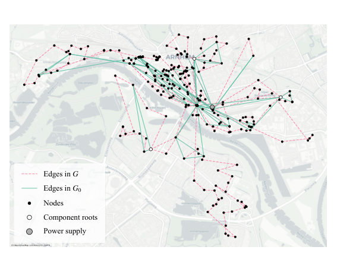
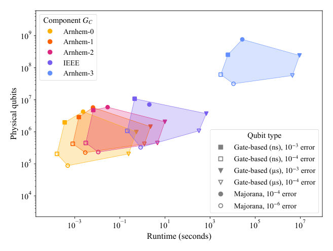
Summary. This paper evaluates the feasibility of using gate-based quantum computing to optimize electricity grid topologies to minimize power losses. By using a higher-order optimization formulation (HUBO), the authors provide a resource estimation that shows how network complexity directly drives the required quantum hardware scale.
Why it may be interesting. not directly relevant
Main problem. Estimating the quantum computational resources (qubits and runtime) required to solve the NP-hard Distribution Network Reconfiguration (DNR) problem for minimizing power losses in electricity grids.
Main result. The study demonstrates that constructing HUBO formulations for real-world networks is feasible, but resource requirements scale extremely rapidly with network size and structural complexity (connectivity and cyclicity).
Method. The authors formulate the DNR problem as a Higher-Order Unconstrained Binary Optimization (HUBO) problem and use the Microsoft Quantum Resource Estimator to perform Quantum Resource Estimation (QRE) for various gate-based and Majorana qubit architectures.
Model / system. The system is a medium-voltage electricity distribution network modeled as a directed graph. The optimization is formulated via a Pauli Hamiltonian (H_HUBO) representing a weighted sum of penalty terms (for vertex, edge, and cycle constraints) and an objective term for power losses.
Key observables. Number of logical qubits, number of rotation gates, number of interaction terms, and estimated execution runtime.
Important parameters / regimes. Network connectivity, cyclicity, number of nodes/edges, and the number of optimization layers.
Assumptions / limitations. The study assumes the use of the surface code for error correction and focuses on the resources for a single optimization layer rather than a full multi-layer pipeline.
Figures summary. Figure 1 illustrates the network graph topology and decomposition into biconnected components; Figure 2 shows the trade-off between runtime and physical qubit count for different qubit technologies.
Paper structure. The paper introduces the DNR problem, presents the HUBO formulation and graph reduction techniques, details the quantum resource estimation methodology, analyzes the scaling of resources relative to network topology, and discusses future implications for large-scale grids.
Distribution network reconfiguration (DNR) can minimise power losses by identifying the optimal topology of the electricity grid. Determining the minimum loss configuration is NP-hard, and classical optimisation methods struggle to scale to real-world distribution grids. This paper explores the use of gate-based quantum computing to solve DNR for power loss reduction. We formulate DNR as a higher-order unconstrained binary optimisation (HUBO) problem, avoiding the need for auxiliary variables, thereby reducing the required number of qubits. This is applied to a real medium voltage (MV) network operated by Alliander, a Dutch distribution system operator (DSO). For each biconnected component in the network graph, we construct the corresponding HUBO, derive the cost and mixer operators, and determine the number of required logical qubits and rotation gates. These are then mapped to physical qubits and execution time estimates using quantum resource estimation (QRE). The results suggest that the quantum resource requirements depend not only on component size but also on structural characteristics such as connectivity and cyclicity. Overall, the novelty of this work lies in directly framing the optimisation problem as a HUBO, applying it to real-world MV networks, and performing a QRE to assess future feasibility.
Authors: Shoya Ogawa, Okuto Morikawa, Takuya Hirose
Type: theory · Category: other · PDF: https://arxiv.org/pdf/2605.03277v1
Analysis basis: full PDF text, analyzed in chunks
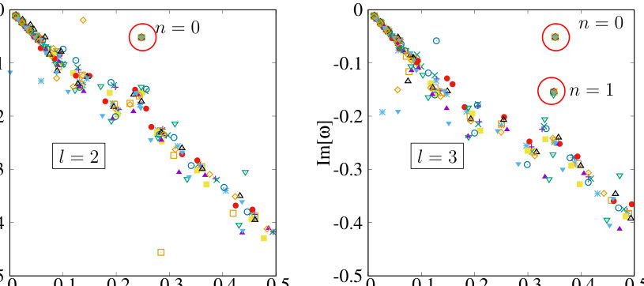
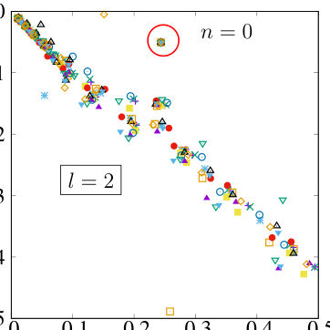
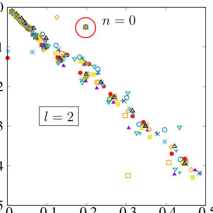
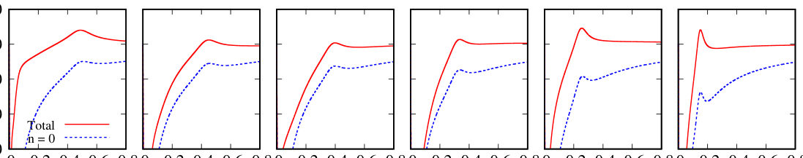
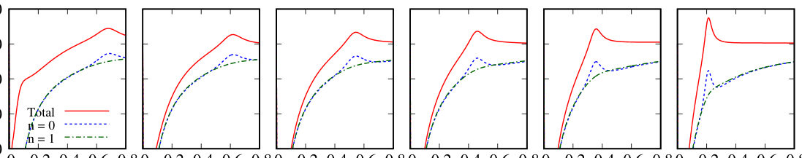
Summary. This paper develops a unified spectral framework using the complex scaling method to study both the discrete resonances and the continuous spectrum of de Sitter black holes. It reveals how the cosmological constant influences the spectral density and shows that the lowest quasinormal mode dominates the continuum response. The method is also shown to be applicable to more complex, higher-dimensional, and string-inspired black hole models.
Why it may be interesting. not directly relevant
Main problem. The paper aims to extend the complex scaling method (CSM) to Schwarzschild-de Sitter spacetimes to investigate how a non-zero cosmological constant modifies both quasinormal-mode poles and the continuum spectral response.
Main result. The authors demonstrate that CSM provides a unified framework for treating QNM poles and the rotated continuum, showing that the lowest QNM pole is the primary driver of the continuum level density structure and that increasing the cosmological constant shifts these features toward lower frequencies.
Method. The complex scaling method (CSM) is applied to Regge-Wheeler-type perturbation equations, using a numerical variational approach with a polynomial times real-range Gaussian basis expansion.
Model / system. The study focuses on four-dimensional Schwarzschild-de Sitter black holes, including scalar, electromagnetic, and gravitational perturbations, as well as extensions to higher-dimensional (5D) and string-inspired (MSW) black hole models.
Key observables. Quasinormal mode (QNM) frequencies, continuum level density (CLD), transmission phase, and greybody factors.
Important parameters / regimes. Cosmological constant (Lambda), spin (s = 0, 1, 2), angular momentum (l = 2, 3), and the scaling angle (theta).
Assumptions / limitations. The analysis focuses on the weakly curved regime (small Lambda) and assumes the validity of the Regge-Wheeler-type master equations in the de Sitter background.
Figures summary. Plots of the complex frequency plane showing discretized continua and QNM candidates; numerical tables of QNM frequencies; and series of plots showing the continuum level density (CLD) and its partial reconstruction using the lowest QNM poles.
Paper structure. The paper begins by defining the mathematical framework of CSM in dS spacetimes, proceeds to numerical implementation and validation against known Schwarzschild results, analyzes the dependence of QNMs and CLD on the cosmological constant, and concludes with extensions to higher-dimensional and coupled-channel systems.
We apply the complex scaling method to black-hole perturbations in four-dimensional Schwarzschild--de~Sitter (dS) spacetimes. The method converts the outgoing-wave boundary-value problem into a non-Hermitian spectral problem and enables quasinormal-mode poles and the rotated continuum to be treated in a common framework. We focus in particular on the continuum level density, which characterizes the continuum response beyond isolated quasinormal-mode frequencies. Using Regge--Wheeler-type perturbation equations for scalar, electromagnetic, and gravitational fields, we investigate how a nonzero cosmological constant modifies the pole and continuum sectors. We also discuss a possible extension to string-inspired coupled-channel systems, and illustrate that higher-dimensional dS black holes can be treated within the same framework, at least in tensor- and vector-type sectors. Our results indicate that complex scaling offers a useful spectral framework for analyzing both quasinormal modes and continuum response in black-hole physics.
Authors: Dongmin Kim, Jeonggeun Seo, Aniket Patra, Youngsun Han
Type: theory · Category: quantum information and computing · PDF: https://arxiv.org/pdf/2605.03616v1
Analysis basis: full PDF text, analyzed in chunks
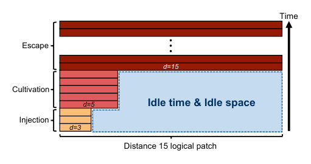
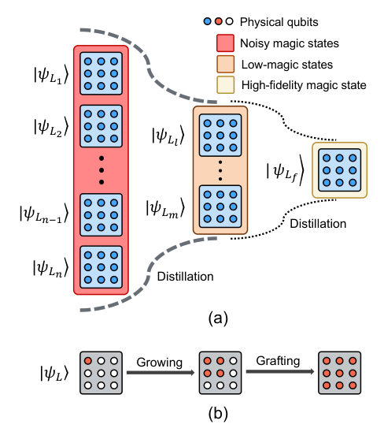
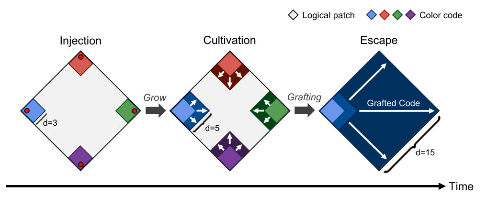
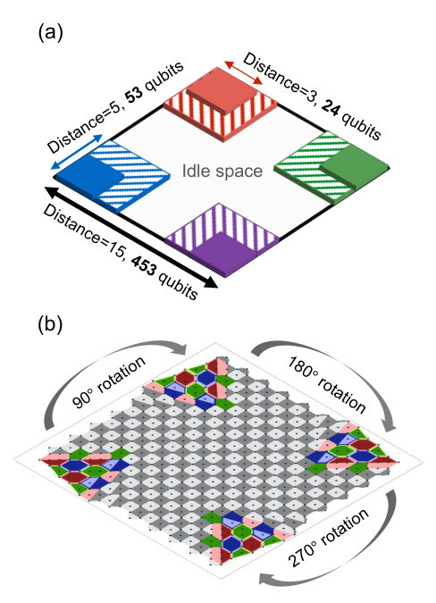
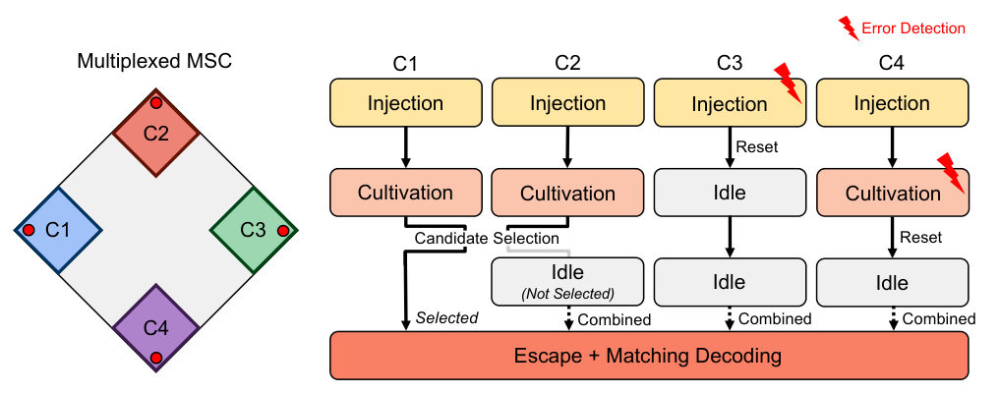
Summary. This paper introduces a multiplexing strategy for magic-state cultivation that utilizes idle space within a logical patch to run multiple cultivation trials in parallel. By doing so, it significantly reduces the frequency of discarded shots due to early-stage errors, thereby lowering the computational overhead for implementing non-Clifford gates in fault-tolerant quantum computing.
Why it may be interesting. not directly relevant
Main problem. High postselection overhead in Magic-State Cultivation (MSC) protocols leads to high discard rates and inefficient use of spacetime volume in fault-tolerant quantum computing.
Main result. The proposed in-patch multiplexing scheme significantly reduces the expected number of attempts required for successful magic-state preparation, with reductions of up to 78.69% in full-cycle attempts at a physical error rate of 2e-3.
Method. The authors propose an in-patch multiplexing protocol that embeds multiple local cultivation sites within a single large logical patch, using a 'grafting' process to forward successful candidates to a standard escape stage.
Model / system. The protocol is modeled within a fault-tolerant quantum error correction framework using color codes and surface codes, subject to a uniform depolarizing noise model including idle noise.
Key observables. Injection-and-cultivation (IC) expected attempts, full-cycle expected attempts, logical error rate, and the decoder-based gap threshold.
Important parameters / regimes. Physical error rate (p = 2e-3), local cultivation distances (d1 = 3, 5), final logical distance (d2 = 15), and the decoder gap threshold (G).
Assumptions / limitations. The efficiency gain relies on an independent-site approximation, which assumes no correlation between the multiplexed sites (e.g., no crosstalk).
Figures summary. Figure 1 compares distillation vs. cultivation; Figure 2 shows resource underutilization in single-site MSC; Figure 3 illustrates the multiplexed protocol structure; Figure 4 shows the 2D lattice embedding of the four sites; Figure 5 shows the end-to-end execution flow; Figure 11 shows cumulative fractions of correct and erroneous shots.
Paper structure. The paper introduces the problem of MSC overhead, presents the proposed in-patch multiplexing architecture, details the protocol stages (injection, cultivation, and escape), provides numerical results comparing the scheme to a single-site baseline, and discusses the scaling of benefits and limitations.
Fault-tolerant quantum computing requires high-fidelity logical magic states for implementing non-Clifford operations. Magic-state cultivation provides a lower-overhead route to logical magic-state preparation, but its efficiency is limited by postselection loss during the early injection-and-cultivation stages. In this work, we propose an in-patch multiplexing scheme that uses early-stage idle resources within a single logical patch to create multiple local cultivation opportunities. A candidate that passes the early stages is forwarded to the standard escape pathway, while the escape stage and the decoder-based acceptance procedure are kept identical to those of the single-site baseline. Under a uniform depolarizing noise model with idle noise, the proposed protocol substantially reduces the injection-and-cultivation discard rate and the expected number of attempts required to obtain an accepted early-stage candidate. At a physical error rate of \(p=2\times10^{-3}\), the injection-and-cultivation expected attempts are reduced by \(45.46\%\) for \(d_1=3\) and by \(72.91\%\) for \(d_1=5\), relative to the single-site MSC baseline. In the direct full-cycle evaluation including escape, the expected attempts per kept logical output are further reduced by \(49.04\%\) for \(d_1=3\) and by \(78.69\%\) for \(d_1=5\) at the same physical error rate. The full-cycle cost curves are shifted toward smaller expected attempts, while the final logical-error behavior remains governed by the escape-stage gap threshold. These results show that in-patch multiplexing can reduce postselection overhead while preserving the standard magic-state cultivation framework.
Authors: Jianxun Li, Chao Xu, Wang Yang
Type: theory · Category: strongly correlated electrons · PDF: https://arxiv.org/pdf/2605.03582v1
Analysis basis: full PDF text, analyzed in chunks
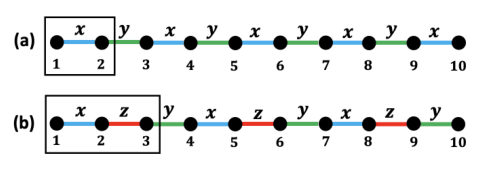
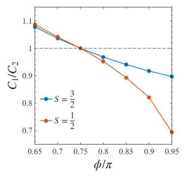
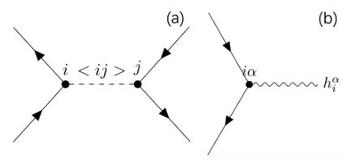
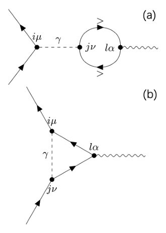
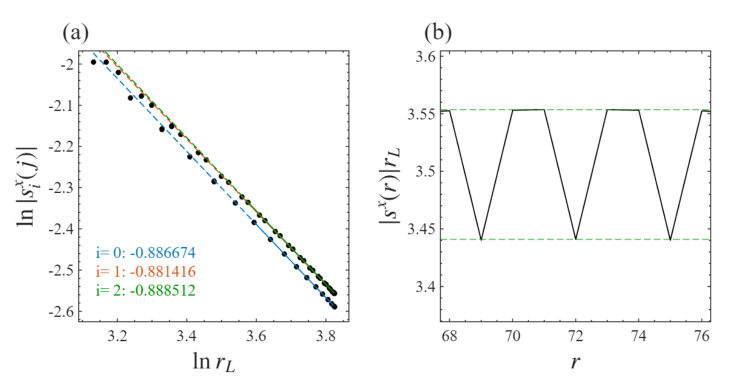
Summary. This paper provides an analytical framework for the bosonization of spin-S Kitaev-type chains using renormalization group theory. It demonstrates that the effects of broken emergent symmetries vanish in the large-S limit and provides specific predictions for the coefficients that govern magnetic ordering.
Why it may be interesting. not directly relevant
Main problem. Determining the bosonization coefficients for spin-S Kitaev-Gamma and Kitaev-Heisenberg-Gamma chains and understanding how the breaking of emergent continuous symmetries scales with spin S.
Main result. The study finds that symmetry-breaking effects in bosonization formulas scale as 1/S in the large-S limit and identifies ten independent bosonization coefficients in the Kitaev-Heisenberg-Gamma model, five of which are independent of Heisenberg coupling to linear order.
Method. Renormalization group (RG) analysis combined with one-loop diagrammatic calculations and validation via Density Matrix Renormalization Group (DMRG) numerical simulations.
Model / system. One-dimensional spin-S Kitaev-Gamma and Kitaev-Heisenberg-Gamma chains, which serve as quasi-1D models for 2D Kitaev materials like alpha-RuCl3.
Key observables. Bosonization coefficients (C and D), spin correlation functions, and scaling of symmetry-breaking terms.
Important parameters / regimes. Spin quantum number S (half-odd-integer), Kitaev coupling (K), Gamma interaction (Gamma), Heisenberg exchange (J), and the parameter delta-Gamma.
Assumptions / limitations. Small delta-Gamma limit, large-S limit for scaling relations, and neglecting higher-order terms in delta-Gamma and J.
Figures summary. Figure 1 shows the ratio of bosonization coefficients as a function of parameter phi; Figure 3 and 4 show diagrammatic representations of the RG vertex and Feynman diagrams for scaling field renormalization; Figure 5 shows log-log plots of spin correlation components.
Paper structure. The paper introduces the spin-S Kitaev models, performs a microscopic derivation using a fermionic representation, applies RG analysis to calculate the renormalization of scaling fields, validates results with DMRG, and discusses the large-S scaling behavior.
Based on a renormalization group (RG) analysis, we study the bosonization formulas in spin-S Kitaev-Gamma and Kitaev-Heisenberg-Gamma chains in the (K < 0, Gamma > 0, J > 0) parameter region, where S is a half-odd integer. We find that the effects associated with the breaking of emergent continuous symmetries in bosonization formulas scale as 1/S in the large-S limit, which is in qualitative agreement with DMRG numerical results for Kitaev-Gamma chains. In Kitaev-Heisenberg-Gamma chains, symmetry analysis reveals ten independent bosonization coefficients, five of which are predicted by the RG analysis to have no dependence on the Heisenberg coupling up to linear order. Our work may offer valuable input for determining magnetic ordering tendencies in two-dimensional Kitaev spin models within a quasi-one-dimensional approach.
Authors: Omar Mustafa, Abdullah Guvendi
Type: theory · Category: other · PDF: https://arxiv.org/pdf/2605.03366v1
Analysis basis: full PDF text, analyzed in chunks
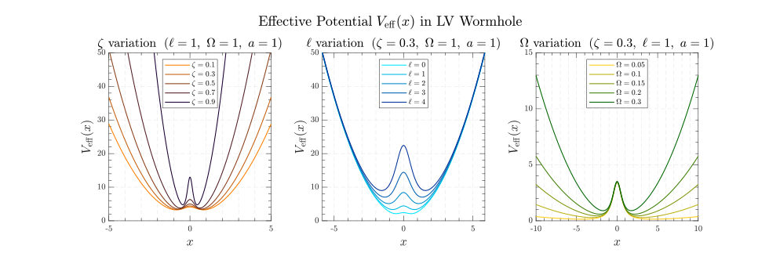
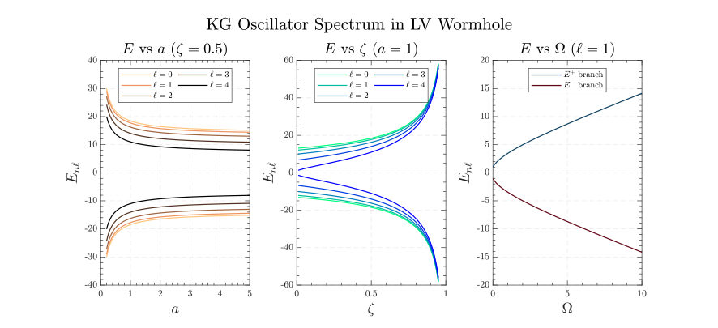
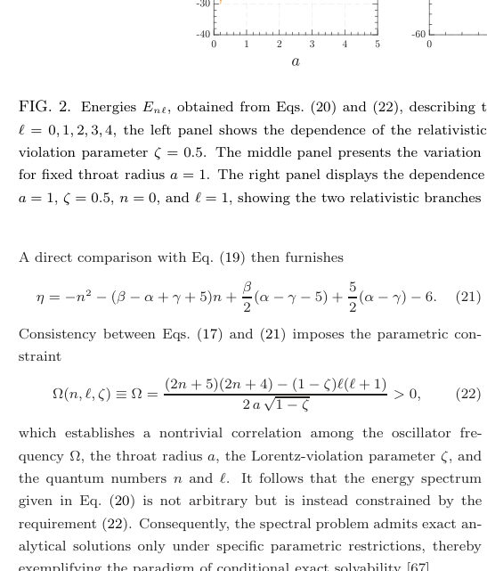
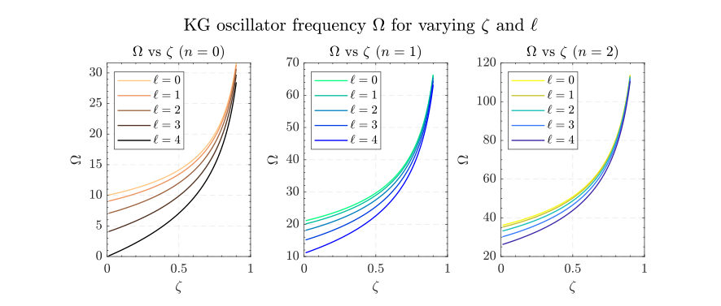
Summary. This paper explores how the topology of a wormhole and the breaking of Lorentz symmetry together influence the quantum energy levels of scalar fields. It demonstrates that the wormhole geometry acts as a regulator that removes singularities and creates a discrete, predictable energy spectrum.
Why it may be interesting. not directly relevant
Main problem. The study investigates the quantum dynamics and spectral properties of scalar bosonic oscillator fields propagating in a (3+1)-dimensional Lorentz-violating wormhole spacetime.
Main result. The researchers found that the wormhole geometry eliminates centrifugal singularities and produces a discrete energy spectrum with particle-antiparticle symmetry, where the spectrum is regulated by curvature and Lorentz-violation strength.
Method. The radial Klein-Gordon equation is mapped to a 1D Schrödinger-type equation and solved using the confluent Heun differential equation framework to find conditionally exact solutions.
Model / system. A 4D traversable, static, spherically symmetric Lorentz-violating wormhole with a nonminimally coupled vector background that generates an effective KG-oscillator interaction.
Key observables. Energy eigenvalues (energy spectrum), effective potential, and particle-antiparticle symmetry.
Important parameters / regimes. Lorentz-violation parameter (zeta), wormhole throat radius (a), oscillator frequency (Omega), and angular momentum quantum number (l).
Assumptions / limitations. The system assumes a specific constant-lapse wormhole metric and requires specific parametric constraints (truncation conditions) for the existence of bound states.
Figures summary. Figure 1 shows the effective potential is regular at the throat; Figure 2 displays the relativistic energy spectrum; Figure 3 illustrates the oscillator frequency as a function of LV deformation and angular momentum.
Paper structure. The paper introduces the LV wormhole geometry, formulates the Klein-Gordon equation with a vector background, maps the radial equation to a Schrödinger-type form, solves the resulting confluent Heun problem, and analyzes the resulting energy spectrum and parameter dependencies.
We investigate the quantum dynamics of scalar bosonic oscillator fields propagating in a (3+1)-dimensional Lorentz-violating (LV) wormhole spacetime within a modified gravity framework. The underlying geometry, characterized by a smooth minimal-radius throat and a globally regular redshift sector, induces nontrivial curvature effects that significantly modify the spectral properties of the Klein-Gordon (KG) field. The field dynamics are formulated in the presence of a nonminimally coupled vector background of the form $\mathcal{F}_μ=(\mathcal{F}_t(x),0,0,0)$, which, under the physically motivated ansatz $\mathcal{F}_t(x)=Ω\, r(x)$, generates an effective KG-oscillator interaction intrinsically encoded by the wormhole geometry. The resulting effective potential is regular and finite at the throat, eliminating centrifugal singularities and ensuring globally well-defined propagation across the minimal-radius region. The spectral problem reduces to a confluent Heun structure, leading to conditionally exact solutions and a discrete energy spectrum governed by curvature, Lorentz-violation strength, and oscillator frequency. The associated eigenvalue structure exhibits a relativistic particle-antiparticle symmetry with curvature-induced deformation and parameter-dependent confinement. Our results demonstrate that LV wormhole spacetimes act as effective dispersive quantum gravitational media, in which spacetime topology and spontaneous Lorentz symmetry breaking jointly regulate confinement, spectral quantization, and the global evolution of scalar bosonic modes.
Authors: Don Danilov, Brad Ganoe, Leon Otis, Zhi Gong, Zixiang Lu, James Shee
Type: theory · Category: numerical methods · PDF: https://arxiv.org/pdf/2605.03981v1
Analysis basis: full PDF text, analyzed in chunks
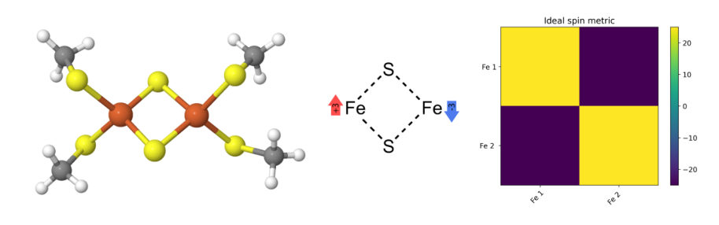
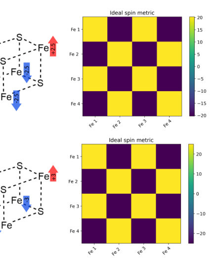
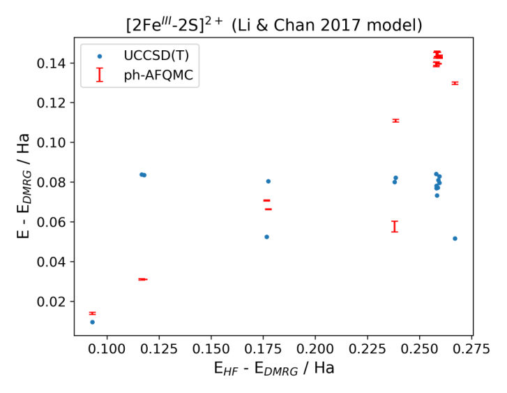
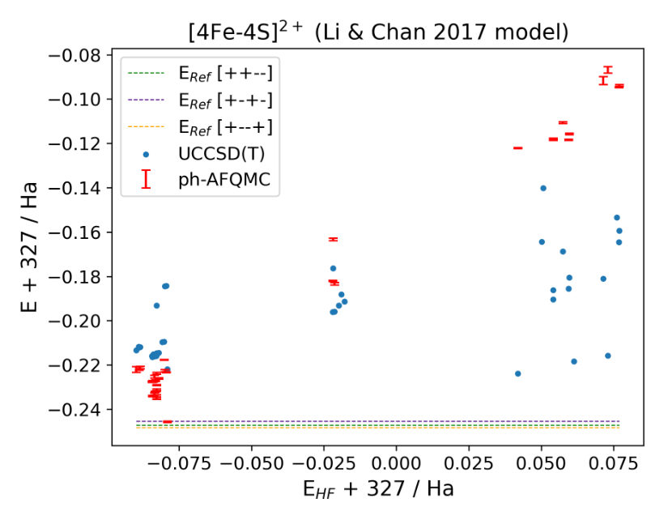
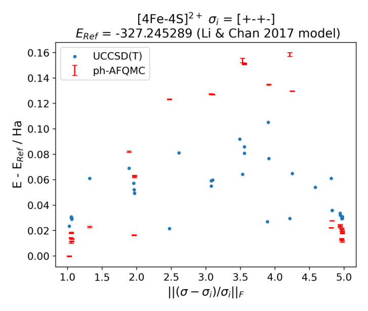
Summary. This paper investigates how the choice of mean-field trial wavefunctions affects the accuracy of ph-AFQMC in transition metal clusters. It demonstrates that while energy-minimizing trials are not always best, selecting trials that preserve physical symmetries can yield surprisingly accurate results despite significant sampling bias.
Why it may be interesting. It provides deep insight into the systematic errors and sampling pathologies (like overcorrelation) that occur when using mean-field importance functions in many-body Monte Carlo simulations.
Main problem. Determining how to select optimal Unrestricted Hartree-Fock (UHF) trial wavefunctions for phaseless auxiliary-field quantum Monte Carlo (ph-AFQMC) to minimize bias in strongly correlated systems.
Main result. The study finds that choosing trial wavefunctions based on physical symmetries and chemical properties (like spin density) is more effective than minimizing variational energy, though the trial states remain suboptimal importance functions that can lead to sampling bias.
Method. Phaseless auxiliary-field quantum Monte Carlo (ph-AFQMC) benchmarked against DMRG, FCI, and CCSD(T) using spin-density metrics to evaluate UHF trial states.
Model / system. Three iron-sulfur (Fe-S) active space models ([2Fe-2S]2+, [4Fe-4S]2+, and [4Fe-4S]4+) and a stretched helium dimer cation (He2+) used as an analogy for sampling bias.
Key observables. Ground-state energies, atomic spin densities, Mulliken spin density, Spin Density Metric (SDM), overlap between stochastic and trial wavefunctions, and local energy fluctuations.
Important parameters / regimes. Imaginary-time step (0.005), walker populations (1024-2048), and Cholesky decomposition threshold (10^-12).
Assumptions / limitations. The phaseless constraint is assumed to be unbiased if the trial wavefunction is an exact eigenstate; the study explores the breakdown of this assumption.
Figures summary. The figures show ph-AFQMC energy errors relative to DMRG/FCI as a function of the Spin Density Metric, energy evolution over imaginary time, and the decay of wavefunction overlap.
Paper structure. The paper introduces the ph-AFQMC problem, presents investigations of specific Fe-S clusters, uses a He2+ dissociation model to explain the mechanism of sampling bias, and concludes with implications for trial wavefunction design.
Phaseless auxiliary-field quantum Monte Carlo (ph-AFQMC) has emerged as a promising electronic structure method for correlated electronic systems. However, the quality of its predictions depends critically on the choice of trial wavefunction, and it is not obvious how to make an optimal choice especially for strongly correlated states of large systems. Mean-field wavefunctions are compelling trial wavefunction candidates as they map directly to chemical concepts and can be obtained with $O(N^4)$ cost. Yet in the strongly correlated regime one faces a symmetry dilemma and the existence of multiple nearly-degenerate solutions. In this work we investigate active space models of [2Fe-2S]$^{2+}$, mixed-valent [4Fe-4S]$^{2+}$, and [4Fe-4S]$^{4+}$ and explore the sensitivity of ph-AFQMC to the choice of unrestricted Hartree-Fock trial wavefunction. We find that chemical properties and physical symmetries, rather than the variational energy, ought to guide the choice of mean-field trial for ph-AFQMC (or reference state for coupled cluster models), and show that surprisingly accurate ground-state energies for these systems can be obtained. However, in all cases we find a rapidly vanishing overlap between the stochastic wavefunction and the UHF trial, indicating that the trials are suboptimal importance functions. By analogy to a similar situation in the stretched helium dimer cation, we show how this sampling bias pushes ph-AFQMC towards artificially negative energies, which evidently can be compensated for by the phaseless bias in certain cases.
Authors: Lauri Vuorenkoski, Arianne Meijer-van de Griend
Type: theory · Category: quantum information and computing · PDF: https://arxiv.org/pdf/2605.03545v1
Analysis basis: full PDF text, analyzed in chunks
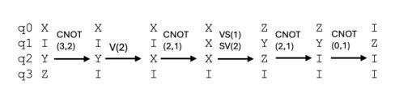
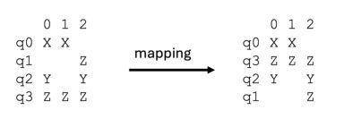
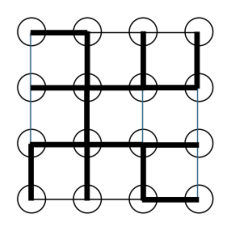
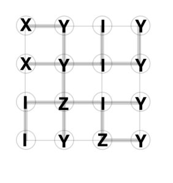
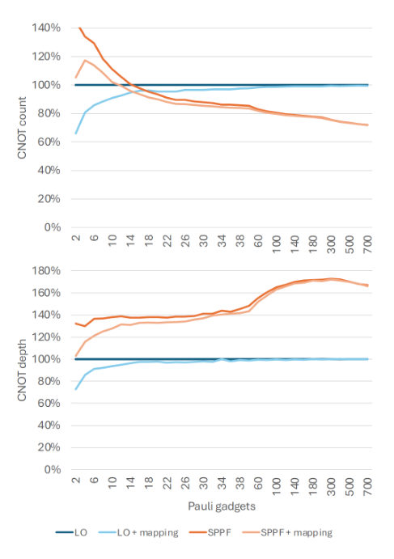
Summary. The paper introduces the 'Shortest Path in Pauli Forest' algorithm, which optimizes the synthesis of Pauli exponentials by treating decomposition as a path-finding problem. It achieves significant reductions in gate counts and execution time by being aware of the underlying quantum hardware architecture. This is crucial for making quantum chemistry simulations more viable on noisy, near-term quantum devices.
Why it may be interesting. not directly relevant
Main problem. Efficiently decomposing Pauli exponentials into quantum circuits while minimizing CNOT count, CNOT depth, and runtime on NISQ-era hardware with specific connectivity constraints.
Main result. The proposed Shortest Path in Pauli Forest (SPPF) algorithm significantly reduces CNOT count (up to 71%) and runtime (up to 91%) compared to standard methods like Lexicographical Ordering and Qiskit/TKET for both random Pauli strings and molecular ansätze.
Method. A heuristic algorithm that models decomposition as a shortest-path problem in a graph of Clifford tableaus, combined with an architecture-aware initial qubit mapping strategy.
Model / system. The study focuses on NISQ-era quantum computing architectures with various topologies (Line, Grid, Guadalupe, and IBM Brisbane/Mumbai) and uses UCCSD molecular ansätze (e.g., H2, LiH, H2O) as application benchmarks.
Key observables. CNOT count, CNOT depth, and algorithm runtime.
Important parameters / regimes. Number of Pauli gadgets (g), number of qubits (n), and hardware connectivity/topology.
Assumptions / limitations. The algorithm assumes Pauli gadgets are mutually commuting (common in Trotterized Hamiltonians) and utilizes a specific Clifford gate set.
Figures summary. Figures demonstrate the decomposition of single gadgets on line topologies, illustrate the construction of connectivity trees on grid topologies, and provide comparative performance plots for CNOT count and runtime across different hardware architectures.
Paper structure. The paper introduces the problem of Pauli exponential decomposition, reviews existing literature, proposes the SPPF algorithm and mapping strategy, presents performance evaluations on random and molecular systems across various topologies, and concludes with a discussion of results.
Decomposing Pauli exponentials efficiently to quantum circuits has been the subject of intense research in recent years. Pauli exponentials are an essential component of many different quantum algorithms. Due to the error-prone nature of current and near term quantum devices, it is crucial that quantum circuits are as compact as possible. Several different types of algorithms have been developed to decompose Pauli exponentials into as short circuits as possible. We propose a novel algorithm for architecture-aware synthesis of Pauli exponentials that also determines the initial qubit placement on the device. We call this the Shortest Path in Pauli Forest algorithm. The results show an improved CNOT count and runtime for both random Pauli exponentials and molecular ansätze.
Authors: Naphan Benchasattabuse, Michal Hajdušek, Rodney Van Meter
Type: theory · Category: quantum information and computing · PDF: https://arxiv.org/pdf/2605.03854v1
Analysis basis: full PDF text, analyzed in chunks
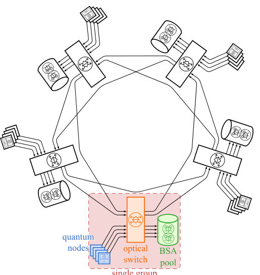
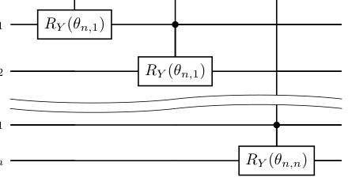
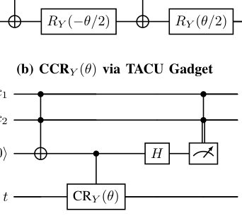
Summary. This paper investigates how to leverage the high-rate capacity of qLDPC codes in a distributed architecture to overcome the sequential bottlenecks of Pauli-based computation. It demonstrates that by using architecture-aware circuit design, one can achieve significant speedups in quantum optimization algorithms compared to traditional surface code approaches.
Why it may be interesting. not directly relevant
Main problem. Optimizing the space-time tradeoffs in distributed quantum computing (DQC) by addressing the bottleneck of slow inter-node entanglement generation in Pauli-based computation (PBC) architectures.
Main result. Large qLDPC code blocks in a Q-Fly architecture outperform the surface code baseline in execution time by up to an order of magnitude for quantum optimization algorithms like QAOA and DQI.
Method. The authors use architecture-aware circuit design and analytical resource estimation, comparing custom-designed distributed circuits against a monolithic surface code baseline using the Q-Fly network topology.
Model / system. A hierarchical Q-Fly architecture consisting of 64 groups of 12 computational nodes connected via a chordal ring graph, utilizing high-rate qLDPC (bivariate bicycle) codes and photonic interconnects for Bell pair generation.
Key observables. Logical cycle counts, execution time (latency), and network operation counts.
Important parameters / regimes. Network latency (T_Bell ranging from 2 to 10 cycles), routing diameter (max 3 hops), node capacity (~1,000 physical qubits), and rotation precision (64-bit).
Assumptions / limitations. Assumes photonic interconnects mediate the network, nodes have sufficient local magic state factories, and routing is limited to two switch hops to maintain fidelity.
Figures summary. Figure 1 illustrates the Q-Fly architecture hierarchy; Figure 2 shows the optimized synthesis of controlled rotations using the TACU gadget; Figure 3 illustrates the WDB-based Dicke state construction.
Paper structure. The paper introduces the problem of PBC bottlenecks in DQC, defines the Q-Fly architecture and qLDPC codes, details the construction of architecture-aware subroutines (adders, rotations, fan-out), performs resource estimation for QAOA and DQI algorithms, and concludes with a comparative performance analysis against surface code architectures.
Pauli-based computation (PBC) provides a universal framework for executing fault-tolerant quantum algorithms using Pauli measurements and magic states. In monolithic architectures, the serialized nature of PBC directly ties runtime to a circuit's T-gate count, making it slow on metrics like circuit depth. However, in distributed quantum computing (DQC), the primary bottleneck is remote Bell pair generation. We investigate the tradeoff between error-correcting code block size and execution time of PBC within the Q-Fly architecture at intermediate scale, limiting individual node capacities to reflect near-term constraints while supplying abundant network nodes to minimize routing and compilation effects. We find that large qLDPC code blocks outperform the surface code baseline in terms of execution time by up to an order of magnitude when evaluated against quantum optimization algorithms. By moving groups of qubits to free nodes to bypass the sequential bottleneck of PBC, the large-block architecture minimizes network operations and achieves faster overall execution. This demonstrates that PBC is a competitive model in the distributed regime, establishing it as a practical compilation baseline for qLDPC systems before invoking more efficient transversal or homological gates.
Authors: Hiroki Nakai, Yusuke Nomura
Type: theory · Category: strongly correlated electrons · PDF: https://arxiv.org/pdf/2605.03028v1
Analysis basis: full PDF text, analyzed in chunks
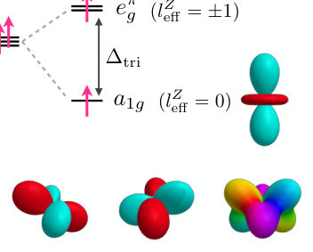
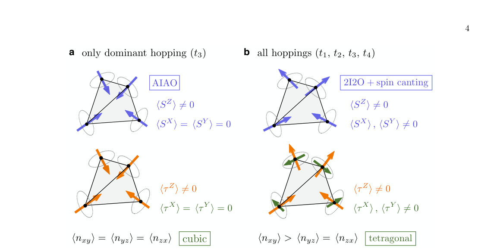
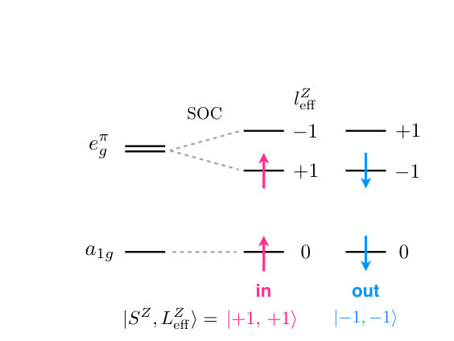
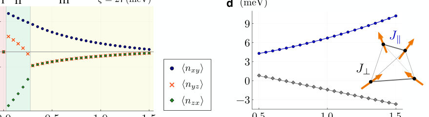
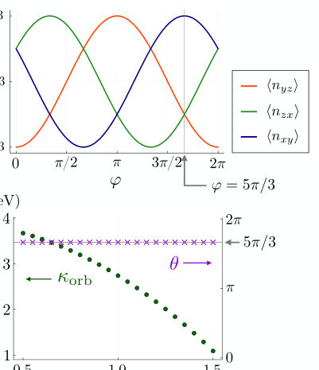
Summary. This paper investigates how subdominant electron hopping and a strong trigonal crystal field drive complex spin-orbital ordering in MnV2O4. It demonstrates that these interactions stabilize a two-in/two-out magnetic structure with intertwined orbital dipole and quadrupole orders. This work provides a microscopic resolution to the long-standing debate regarding the orbital configuration in this spinel vanadate.
Why it may be interesting. not directly relevant
Main problem. Determining the microscopic origin of the intertwined dipole-quadrupole orbital order and the specific magnetic configuration in the spinel vanadate MnV2O4.
Main result. The inclusion of subdominant hopping processes and a strong trigonal crystal field stabilizes a two-in/two-out (2I2O) magnetic configuration with spin canting and ferroquadrupolar orbital order, resolving the debate over the orbital state.
Method. The authors combine first-principles DFT calculations with a strong-coupling expansion and mean-field theory using SU(N) coherent states to derive and analyze an effective spin-orbital Hamiltonian.
Model / system. The system is the spinel vanadate MnV2O4, specifically the V3+ ions on a pyrochlore lattice. The model is a multiorbital Kugel-Khomskii-type Hamiltonian including Coulomb interaction, trigonal crystal field, spin-orbit coupling, and electron hopping.
Key observables. Spin configurations (AIAO vs 2I2O), orbital dipole and quadrupole moments, orbital occupations, and spin canting angles.
Important parameters / regimes. Trigonal crystal field splitting (42 meV), spin-orbit coupling strength (27 meV), hopping integrals (t1-t4), and the tuning parameter x for subdominant hopping.
Assumptions / limitations. Neglects intersite quantum fluctuations and single-site spin-orbital entanglement; assumes the validity of the effective low-energy manifold.
Figures summary. Figure 1a shows the spinel structure, pyrochlore lattice, and local trigonal axes.
Paper structure. The paper begins by defining the scientific problem and the physical system, followed by the construction of the multiorbital Hamiltonian using DFT-derived parameters, the derivation of the effective spin-orbital model via perturbation theory, a mean-field analysis of phase evolution, and a conclusion on the stabilized 2I2O state.
Orbitally degenerate systems provide a promising platform for realizing novel quantum phases driven by spin-orbital exchange interactions, as described by the Kugel-Khomskii model. Spinel vanadates, in which orbital degrees of freedom remain active, exhibit structural and magnetic transitions accompanied by orbital ordering, but the nature of the orbital state in MnV$_2$O$_4$ remains under debate. Here, we combine first-principles calculations with an effective spin-orbital model to address this problem. We show that a significant trigonal crystal field is present in high-temperature cubic phase and plays an essential role in determining the low-energy degrees of freedom. Based on the resulting parameters, we construct an effective Hamiltonian beyond the conventional dominant-hopping approximation and demonstrate that subdominant hopping processes strongly modify the spin-orbital exchange interactions. As a result, the system stabilizes a two-in/two-out magnetic configuration featuring spin canting and intertwined dipole-quadrupole orbital order.
Authors: Gülşen Doğan, Ümit Akıncı
Type: theory · Category: statistical mechanics · PDF: https://arxiv.org/pdf/2605.03755v1
Analysis basis: abstract only; PDF text extraction failed or PDF unavailable
Summary. This paper uses Monte Carlo simulations to show how weak interlayer coupling in synthetic antiferromagnets can stabilize and restore symmetry in meron-antimeron lattices. It demonstrates that even when global crystal order is lost, local topological synchronization can persist, offering a way to manipulate fractional textures for spintronics.
Why it may be interesting. not directly relevant
Main problem. Investigating the structural symmetry breaking and topological locking of meron-antimeron crystals in synthetic antiferromagnetic (SAF) bilayers under easy-plane anisotropy.
Main result. The study finds that ultra-weak interlayer exchange acts as a structural scaffold that restores C4 rotational symmetry and induces lattice compression, even when local topological locking persists after global crystalline order collapses.
Method. Large-scale Monte Carlo simulations.
Model / system. Synthetic antiferromagnetic (SAF) bilayers subjected to easy-plane magnetic anisotropy, focusing on the formation and stability of meron-antimeron crystals and bimeron dipoles.
Key observables. Rotational symmetry (C4 vs C2), inter-core distance, lattice compression, and local topological locking.
Important parameters / regimes. Easy-plane magnetic anisotropy, interlayer antiferromagnetic exchange strength, and the uncoupled monolayer limit.
Assumptions / limitations. The study assumes the validity of the Monte Carlo approach for simulating the magnetic textures in the presence of anisotropy and interlayer coupling.
Paper structure. The paper investigates the uncoupled monolayer limit, introduces interlayer exchange effects, analyzes the transition from rigid crystals to pre-collapse states, and concludes with the behavior at extreme anisotropy limits.
Synthetic antiferromagnets offer a robust platform for stabilizing fractional topological textures, effectively circumventing the limitations of ferromagnetic systems. In this study, we utilize large-scale Monte Carlo simulations to investigate the spontaneous topological locking and structural symmetry restoration of meron-antimeron crystals within SAF bilayers subjected to easy-plane magnetic anisotropy. In the uncoupled monolayer limit, increasing anisotropy induces an extreme core-shrinking effect that physically expands the inter-core distance and triggers a $C_4 \rightarrow C_2$ symmetry breaking. However, the introduction of an ultra-weak interlayer antiferromagnetic exchange acts as an active structural scaffold. For rigid crystals, this coupling strictly enforces vertical synchronization, forming robust antiferromagnetic bimeron dipoles and fully restoring the macroscopic $C_4$ rotational symmetry. Furthermore, in highly expanded, pre-collapse crystals, we observe an anomalous interlayer-induced lattice compression that actively maximizes the exchange energy. At extreme anisotropy limits where macroscopic crystalline order irrecoverably collapses, the bilayer coupling continues to enforce a strict local topological locking of surviving isolated defects. These findings reveal a fundamental decoupling between local vertical synchronization and global structural order, providing a comprehensive theoretical roadmap for stabilizing and manipulating fractional topological textures in beyond-skyrmion spintronic architectures.
Authors: Luis E. Olmos
Type: both · Category: statistical mechanics · PDF: https://arxiv.org/pdf/2605.03879v1
Analysis basis: abstract only; PDF text extraction failed or PDF unavailable
Summary. This paper demonstrates that urban traffic congestion behaves like a thermodynamic phase transition. By defining an effective temperature for cities, the authors can predict which urban infrastructures are prone to sudden, system-wide traffic jams.
Why it may be interesting. not directly relevant
Main problem. Understanding the transition of urban traffic from free-flowing to congested states and identifying the underlying drivers of traffic resilience.
Main result. City-scale congestion is shown to undergo a nonlinear phase transition analogous to an order-disorder transition, where an effective thermodynamic temperature quantifies infrastructural heterogeneity and predicts congestion fragility.
Method. The study applies statistical mechanics frameworks to large-scale urban mobility data, deriving an effective thermodynamic temperature and analyzing a free-energy landscape.
Model / system. The system is urban traffic networks across 46 cities in Latin America and the Caribbean, plus 8 additional cities globally, treated as a many-body system where aggregate mobility is the control parameter.
Key observables. Aggregate mobility (control parameter), jam extent (order parameter), and an effective thermodynamic temperature.
Important parameters / regimes. Aggregate mobility, infrastructural heterogeneity (via effective temperature), and entropy-capacity trade-offs.
Assumptions / limitations. The paper assumes the traffic transition can be mapped onto a formal thermodynamic phase transition framework.
Paper structure. The paper introduces the phase transition analogy, derives the effective thermodynamic temperature, presents the free-energy landscape, and validates the framework using multi-city empirical data.
Understanding how cities transition from free-flowing to congested traffic remains a central open problem in urban science. Here we show that city-scale congestion undergoes a reproducible nonlinear transition analogous to an order-disorder phase transition in statistical mechanics, in which aggregate mobility acts as a control parameter and jam extent as a collective order parameter. Crucially, this analogy is not merely formal: we derive and empirically identify an effective thermodynamic temperature with concrete physical meaning, quantifying infrastructural heterogeneity and how broadly a city explores congestion configurations as demand increases. Low-temperature cities are congestion-fragile: small mobility increases trigger sharp, system-wide jam transitions. This framework further reveals that the macroscopic fundamental diagram is an incomplete description of the traffic state: it emerges as a projection of a richer free-energy landscape governed by entropy-capacity trade-offs. Validated across 46 cities in Latin America and the Caribbean and independently confirmed with loop-detector data from 8 cities on three continents, these results establish a physics-based foundation for comparing urban traffic resilience and anticipating congestion regime shifts under changing mobility demand.
Authors: Jose M. Torres-Lopez, Sudipta Kundu, Felipe H. da Jornada, Tony Heinz, Allan H. MacDonald
Type: theory · Category: strongly correlated electrons · PDF: https://arxiv.org/pdf/2605.03162v1
Analysis basis: full PDF text, analyzed in chunks
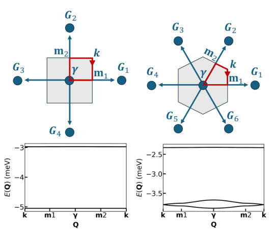
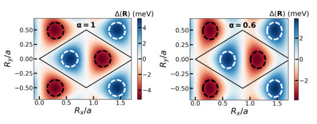
Summary. This paper explores how periodic electrostatic landscapes can be used to engineer the valley properties of excitons in 2D TMDs. It demonstrates that breaking rotational symmetry can lift valley degeneracy and create linear dispersion. These findings suggest a method to stabilize 2D exciton superfluids by suppressing thermal excitations.
Why it may be interesting. The discovery that engineered potentials can create a non-degenerate, linearly dispersing exciton band provides a theoretical pathway to achieving true 2D Bose-Einstein condensation and superfluidity, which is otherwise suppressed by thermal fluctuations in standard 2D systems.
Main problem. Investigating how periodic electrostatic potentials and reduced rotational symmetry affect the exciton spectra, valley degeneracy, and dispersion in 2D transition-metal dichalcogenide (TMD) semiconductors.
Main result. Electrostatic potentials can drive optical valley splitting up to 10 meV and induce valley-selective dispersion, where the lowest exciton band becomes non-degenerate with linear dispersion, potentially enabling 2D Bose condensation.
Method. The study uses a center-of-mass model with exact diagonalization, analytical perturbation theory, and a tight-binding/Wannier representation using Gaussian wavefunctions.
Model / system. 2D group VI TMD semiconductors subjected to periodic electrostatic potentials (triangular, square, or striped) via the quadratic Stark effect, modeled using a Hamiltonian containing kinetic energy, periodic potential, and electron-hole exchange interaction.
Key observables. Optical valley splitting (valley gap), exciton band dispersion (linear vs. quadratic), and optical conductivity/absorption weight.
Important parameters / regimes. Potential strength (approx. 1 meV), lattice constant (approx. 50 nm), exchange interaction strength (0.4-0.6 eV nm), and anisotropy parameter (alpha).
Assumptions / limitations. The smooth potential limit (weak potential gradients), the local quadratic Stark shift approximation, and the truncation of the exchange interaction to the first shell of reciprocal lattice vectors.
Figures summary. Figure 1 shows reciprocal lattice vectors and exciton bands for triangular and square lattices; Figure 2 compares isotropic vs. anisotropic triangular potentials; Figure 3 shows exciton band structures for triangular lattices; Figure 4 compares square and anisotropic potentials.
Paper structure. The paper introduces the physical system and the center-of-mass model, analyzes the effect of rotational symmetry on valley splitting and dispersion, explores the impact of anisotropy on band stability, and discusses the implications for 2D Bose condensation.
Two-dimensional (2D) van-der-Waals materials are a promising platform for exciton state engi- neering. In this paper, we study the properties of excitons in 2D group VI transition-metal dichalco- genide (TMD) semiconductors that are modified by a periodic electrostatic potential through the quadratic Stark effect. Using a model that retains only center-of-mass and valley degrees-of-freedom, we find that electrostatic potentials can drive optical valley splitting up to 10meVs and induce valley selective exciton dispersion. We explain why both properties are sensitive to the rotational symmetry of the electrostatic trapping potential using a combination of numerical results and an- alytical approximations. An important consequence of valley-splitting is that the lowest exciton band is non-degenerate and has a linear dispersion around gamma that is expected to suppress thermal excitations, allowing true Bose condensation and superfluidity of excitons in two space dimensions.
Authors: Qian-Qian Hong, Zhi-Jian Zheng, Zhe-Jun Zhang, Xin-Xia Jian, Chuan-Cun Shu
Type: theory · Category: other · PDF: https://arxiv.org/pdf/2605.03468v1
Analysis basis: full PDF text, analyzed in chunks
Summary. This paper presents a theoretical method for universal three-level (qutrit) control using the rotational states of asymmetric-top molecules. By using an auxiliary state for phase control, the authors demonstrate high-fidelity gate implementation and provide an analytical tool for designing robust microwave pulse sequences. The study specifically highlights how different gate decomposition strategies impact the system's sensitivity to experimental errors.
Why it may be interesting. This work is highly relevant for AMO physicists as it proposes a new molecular platform for qutrit-based quantum information processing, leveraging the unique $\Delta$-type coupling of asymmetric tops to overcome symmetry constraints found in traditional qubit platforms.
Main problem. Achieving universal single-qutrit control in asymmetric-top molecules and determining optimal gate decomposition sequences to minimize sensitivity to control errors.
Main result. The authors established a theoretical framework for universal qutrit control using asymmetric-top molecules, demonstrating high-fidelity Walsh-Hadamard gates and identifying that phase error sensitivity depends on the specific SU(2) decomposition sequence used.
Method. The study uses an analytical protocol combining SU(2) rotations with auxiliary-state-mediated phase operations, employing the first-order Magnus approximation and a multilevel pulse-area theorem to map gate parameters to microwave control fields.
Model / system. The system consists of asymmetric-top molecules (specifically 1,2-propanediol) modeled as rigid rotors in the electronic and vibrational ground states, where the qutrit is encoded in three rotational eigenstates coupled via electric-dipole transitions.
Key observables. Average gate fidelity, state fidelity, density matrix elements, and error deviations in the generalized Bloch-vector (Gell-Mann) representation.
Important parameters / regimes. Rotational constants (A, B, C), dipole moments (mu_a, mu_b, mu_c), pulse areas (theta), and phase errors (zeta) and amplitude errors (xi).
Assumptions / limitations. The model assumes a rigid rotor approximation, the electric-dipole approximation for molecule-field interaction, and uses the first-order Magnus approximation for unitary operator derivation.
Figures summary. Figure 1 shows the qutrit encoding and control scheme; Figure 2 displays gate fidelities; Figure 3 presents the density matrix for the Walsh-Hadamard gate; Figure 4 shows error coefficients and fidelity vs. amplitude error; Figure 5 illustrates the time evolution of error deviations in the Bloch-vector representation.
Paper structure. The paper introduces the control framework and molecular platform, derives the analytical pulse-area theorem and gate decomposition, validates the approach with numerical simulations of 1,2-propanediol, performs a detailed error analysis of amplitude and phase perturbations, and concludes with a study of decomposition sequence validity.
We present a theoretical framework for universal single-qutrit control in asymmetric-top molecules, advancing molecular quantum information processing. In this approach, the qutrit is encoded in three rotational eigenstates, with an auxiliary state providing independent phase control within the computational manifold. We explore an analytic protocol for arbitrary single-qutrit gates, combining directly addressable SU(2) rotations with auxiliary-state-mediated phase operations. To support this, we derive a multilevel pulse-area theorem that provides an explicit analytic mapping between gate parameters and control fields, enabling systematic design of high-fidelity microwave pulse sequences. Numerical simulations with 1,2-propanediol confirm the robustness of our approach, achieving Walsh-Hadamard gates with minimal leakage from the computational subspace. We further examine four SU(2) decomposition strategies and find that phase-error sensitivity depends on the decomposition sequence, while amplitude errors propagate along specific coherence pathways. Our results establish asymmetric-top molecules as a viable platform for qutrit-based quantum operations and offer an analytical method for precise quantum control of complex multilevel systems.
Papers from cond-mat.mtrl-sci, mes-hall, other, soft, supr-con. These archives are de-prioritized — they appear at the end regardless of relevance score.
Authors: A. M. Tishin
Type: theory · Category: other · PDF: https://arxiv.org/pdf/2605.03087v1
Analysis basis: full PDF text, analyzed in chunks
Topic relevance: 🔥 non-equilibrium dynamics 4/5 · methods for driven-dissipative 3/5 · non-equilibrium universality 3/5 · correlated / nonlocal dissipation 2/5 · driven-dissipative phase transition 2/5 · spintronics-quantum-optics interface 2/5
Summary. This paper proposes a new method for non-destructive testing of materials by measuring the production of phase-conjugate Bogoliubov modes during rapid parameter changes. By using a new dimensionless metric, the author demonstrates that sub-wavelength defects can be detected through phase dynamics even when they are invisible to traditional amplitude-based methods.
Why it may be interesting. It provides a rigorous framework for studying non-equilibrium dynamics, mode-mixing, and the breakdown of the WKB approximation in driven-dissipative bosonic systems, which is highly relevant to open quantum systems and quantum optics.
Main problem. Developing a metrological framework to detect sub-wavelength structural defects in time-varying condensed media by analyzing non-adiabatic phase-mode redistribution.
Main result. The establishment of a universal dimensionless non-adiabaticity parameter (eta) and a scaling law (xi = eta/U) that allows for the detection of defects below the Rayleigh diffraction limit.
Method. Numerical simulations using the QuTiP engine with a large-scale bosonic Fock basis and Lindblad Master Equation approach, validated by high-precision RK4 integration.
Model / system. Time-varying condensed media such as ultrafast magnetic media, ENZ metamaterials, and magnetoelectric composites, modeled by a second-order oscillator equation with time-dependent frequency and Kerr-type anharmonicity.
Key observables. Bogoliubov coefficients (u and v), phase-mode redistribution, spectral asymmetry ratio (|v|^2/|u|^2), and Fock-state occupancy.
Important parameters / regimes. Non-adiabaticity parameter (eta), stability ratio (xi = eta/U), anharmonicity (U), and critical spatial scale (L_crit).
Assumptions / limitations. The use of a truncated Hilbert space is valid if high-level Fock state occupancy is negligible; the system follows a Euclidean normalization (|u|^2 + |v|^2 approx 1) due to dissipation.
Figures summary. Figures show Fock-state occupancy, high-resolution phase-coherence, and thermodynamic audits of the stability map.
Paper structure. The paper introduces the problem of sub-wavelength defect detection, defines the non-adiabaticity metric, classifies material regimes (adiabatic vs. non-adiabatic), provides numerical validation of the scaling law, and concludes with the robustness of the framework against noise.
This study investigates non-adiabatic wave dynamics in condensed media and the transition from adiabatic stability to spectral chaos. We introduce a dimensionless parameter, as a universal metric to quantify phase-mode redistribution at sub-wavelength inhomogeneities. Our framework treats defects as localized sites of adiabaticity violation triggering non-adiabatic parametric excitation of the ground state. Numerical validation in an expanded 50-level bosonic basis demonstrates that the framework accurately distinguishes between adiabatic regimes in ENZ-metamaterials and non-adiabatic transitions in ultrafast magnetic media . We establish a universal scaling law governed by the non-adiabaticity-to-regulation ratio, proving that the proposed metric remains a robust metrological tool for identifying sub-wavelength inhomogeneities across diverse material classes. Computational singularities observed at extreme loads identify the rigorous operational boundaries for coherent mode-mixing. The robustness of the proposed framework is numerically validated, proving the method's reliability for a wide class of non-linear condensed media satisfying the stability criterion. This result provides a rigorous physical justification for the dynamic Hilbert space truncation (effective fermion-like dynamics), ensuring metrological consistency in complex structural environments. These results provide a theoretical foundation for probing ultrafast collective excitations and latent internal stresses, extending structural analysis beyond the traditional diffraction barrier.
Authors: Sai Abhishikth Dhurjati, Moritz Langer, Yared G. Zena, Ahmad Rahimi, Liesa Raith, Martin Bauer, Frank H. P. Fitzek, Riccardo Bassoli, Caspar Hopfmann
Type: experiment · Category: quantum information and computing · PDF: https://arxiv.org/pdf/2605.03672v1
Analysis basis: abstract only; PDF text extraction failed or PDF unavailable
Topic relevance: 🔥 QC/QI experiment 4/5 · 🔥 quantum optics experiment 4/5 · interference shaping light 2/5
Summary. The researchers developed a method using AFM-assisted lithography to precisely position quantum dots within optical microcavities. This technique achieves significant light enhancement and stable polarization, providing a scalable approach for creating high-performance quantum light sources.
Why it may be interesting. This work is highly relevant to quantum optics and photonic quantum information as it provides a scalable, experimental pathway to creating high-fidelity, deterministic single-photon sources by precisely controlling the light-matter interface.
Main problem. The random spatial distribution of semiconductor quantum dots (QDs) grown via molecular beam epitaxy prevents deterministic coupling to optical microcavities, which is essential for scalable quantum light sources.
Main result. The authors demonstrated an AFM-assisted nano-oxidation lithography technique that enables deterministic QD positioning with a radial displacement of 51(28) nm, achieving a 245-fold photoluminescence enhancement in circular Bragg gratings.
Method. Room-temperature atomic force microscopy (AFM)-assisted nano-oxidation lithography is used to position GaAs QDs within asymmetric circular Bragg gratings.
Model / system. The physical system consists of GaAs semiconductor quantum dots embedded within free-standing asymmetric circular Bragg gratings.
Key observables. Photoluminescence enhancement, fine-structure splitting (FSS), polarization-resolved spectroscopy, Stokes parameters, and polarization imbalance.
Important parameters / regimes. Radial displacement of 51(28) nm, 245-fold photoluminescence enhancement, and polarization imbalance below 5%.
Paper structure. The paper introduces the problem of random QD distribution, describes the AFM-assisted lithography technique, presents the experimental results for QD positioning and photoluminescence enhancement, and concludes with the implications for quantum information technologies.
Semiconductor quantum dots (QDs) grown by molecular beam epitaxy are excellent quantum emitters, but their random spatial distribution hinders deterministic coupling to optical microcavities. We demonstrate a room-temperature atomic force microscopy (AFM)-assisted nano-oxidation lithography technique enabling QD positioning with a radial displacement of $51(28)$ nm. Free-standing asymmetric circular Bragg gratings incorporating AFM-positioned GaAs QDs exhibit a $245$-fold photoluminescence enhancement and fine-structure splitting (FSS) comparable to bulk QDs. Polarization-resolved spectroscopy and finite-difference time-domain simulations show robust emission for displacements up to $50$ nm (Stokes parameter $\lvert S \rvert < 0.05$ ). The devices display stable FSS and polarization imbalance below $5 \, \%$ , confirming precise, reproducible alignment and potential for high fidelity devices. This scalable approach enables deterministic integration of high-performance QDs with photonic cavities, advancing practical quantum light sources for quantum information technologies.
Authors: Olha Bahrova, Jiahao Ren, Feng Jin, Rui Su, Guillaume Malpuech, Dmitry Solnyshkov
Type: both · Category: other · PDF: https://arxiv.org/pdf/2605.03047v1
Analysis basis: full PDF text, analyzed in chunks
Topic relevance: analog quantum simulation 3/5 · exotic spin models in light-matter 3/5 · Keldysh / 2PI / non-Gaussian methods 2/5 · interference shaping light 2/5 · non-equilibrium dynamics 2/5
Summary. This paper shows that a non-Abelian gauge field can significantly enhance the canalization of light beams in microcavities. By coupling spatial motion to polarization precession, the gauge field provides a Lorentz-like force that suppresses beam spreading. This effect leads to a ten-fold improvement in beam collimation compared to standard predictions.
Why it may be interesting. The paper explores the emergence of non-Abelian gauge fields and Yang-Mills dynamics in a photonic platform, which is highly relevant to researchers interested in synthetic gauge fields, topological photonics, and the manipulation of pseudospin-orbit coupling.
Main problem. Investigating how a non-Abelian gauge field, arising from the coupling between spatial dynamics and polarization pseudospin precession, affects the canalization (beam collimation) of light in photonic systems.
Main result. The study demonstrates a ten-fold enhancement of beam canalization for a Gaussian beam due to the non-Abelian gauge field compared to descriptions based solely on group velocity. It also identifies an anti-symmetric pattern of circular polarization accompanying this effect.
Method. The authors use a combination of semi-classical trajectories of wavepacket components and direct numerical solutions of the spinor Schrodinger equation in real space, utilizing a Hamiltonian formalism to derive equations of motion.
Model / system. The system consists of planar microcavities where TE-TM splitting and linear birefringence create tilted Dirac points. The dynamics are modeled using a Yang-Mills theory for SU(2) where the system acts as a matter field coupled to an emergent non-Abelian gauge potential.
Key observables. Total polariton intensity (beam profile), Stokes vector component s3 (circular polarization degree), pseudospin precession, and Zitterbewegung-like oscillations.
Important parameters / regimes. TE-TM splitting strength (beta), optical birefringence (beta0), in-plane wavevector (k), and initial Gaussian beam width.
Assumptions / limitations. The analytical approach assumes the s3 spin component evolution is equivalent to a nonlinear Duffing oscillator and treats the x-direction wavevector as approximately constant (qx approx 1).
Figures summary. Fig 1 shows different isofrequency contour types, beam canalization simulations, and the anti-symmetric s3 pattern. Fig 2 displays the evolution of spin projection, momentum, and transverse coordinates, highlighting the beam shift with and without the gauge field.
Paper structure. The paper introduces the concept of beam canalization via isofrequency contours, presents a mathematical model using non-Abelian gauge fields and Hamiltonian dynamics, provides numerical simulations of beam propagation and spin evolution, and concludes with a comparison of the gauge-field-enhanced effect versus standard group velocity models.
Hyperbolic and quasi-flat isofrequency contours (IFCs) are used for beam canalization and can be created by tilted Dirac points in photonic systems. Dirac points in microcavities are generated by the combination of transverse-electric/transverse-magnetic splitting and linear birefringence. We show that the canalization is here strongly assisted by the coupling between the spatial dynamics and polarization pseudospin precession. This dynamics is well described analytically and numerically as the action of a non-Abelian gauge field on emergent charges (spin current). We demonstrate a ten-fold enhancement of the canalization for a Gaussian beam by the gauge field, as compared to a description based solely on the group velocity associated with the IFCs.
Authors: Owen Sheekey, Tim Child, Elena Cornick, Saeed Fallahi, Geoffrey C. Gardner, Michael J. Manfra, Eran Sela, Yaakov Kleeorin, Yigal Meir, Silvia Lüscher, Joshua Folk
Type: experiment · Category: statistical mechanics · PDF: https://arxiv.org/pdf/2605.03876v1
Analysis basis: full PDF text, analyzed in chunks
Topic relevance: entanglement & information structure 3/5 · quantum measurements 3/5 · QC/QI experiment 2/5 · correlated / nonlocal dissipation 2/5
Summary. The researchers demonstrated a method to measure the entropy of an entire coupled system by monitoring the charge of a single quantum dot. By applying Maxwell relations to temperature-dependent charge measurements, they successfully probed entropy changes in both weakly and strongly coupled regimes. This establishes quantum dots as effective sensors for the thermodynamic properties of nearby mesoscopic circuits.
Why it may be interesting. This work demonstrates a way to use a local probe to sense non-local thermodynamic properties, which is highly relevant for monitoring entanglement entropy or topological signatures in open quantum systems and many-body circuits.
Main problem. Developing a method to measure 'remote' entropy—the entropy change of an entire system beyond the local site of an added particle—and testing the ability of a quantum dot to act as an auxiliary sensor for the entropy of a separate, coupled part of a circuit.
Main result. Demonstrated that charge measurements on one quantum dot can reveal entropy changes of an entire coupled two-dot system, validating Maxwell relation-based measurements for detecting both microstate-counting and hybridized regimes.
Method. Used Maxwell relations to connect entropy change to the temperature dependence of particle number, implemented via rapid reservoir temperature modulation (Joule heating) and charge sensing via a quantum point contact.
Model / system. A pair of capacitively coupled GaAs/AlGaAs lateral quantum dots (QD1 and QD2) tunnel-coupled to a shared reservoir, where QD1 is monitored by an adjacent quantum point contact (QPC) charge sensor.
Key observables. Change in QPC current (delta I_CS), change in dot occupation (N), and extracted entropy change (delta S_sys).
Important parameters / regimes. Interdot electrostatic interaction (U12), dot-reservoir coupling (Gamma), temperature (T), and gate voltages.
Assumptions / limitations. The model assumes no direct interdot tunneling and relies on the validity of Maxwell relations in the mesoscopic regime; the analysis also assumes the ability to isolate spurious signals from the sensor-dot coupling.
Figures summary. Fig 1 shows the device SEM, charging diagrams, and charge sensor signal maps; Fig 3 shows entropy change measurements across transitions and their evolution with coupling; Fig 4 shows entropy change across the (0,1) to (1,0) transition.
Paper structure. The paper introduces the remote sensing problem, describes the experimental GaAs quantum dot platform, details the thermodynamic measurement protocol using Maxwell relations, presents results in the weak-coupling (microstate counting) and strong-coupling (hybridized) regimes, and discusses signal purification techniques.
Recent experiments have demonstrated that measurements of the entropy change associated with the addition of electrons to semiconductor- and graphene-based quantum dots accurately quantify the spin and orbital degeneracy of the states into which they are added. However, measuring more exotic entropies requires probing the entropy change of an entire system in response to an added particle. Here, we demonstrate that Maxwell relation-based measurements probe not only the entropy change associated with the added electron but also that of the surrounding system as it responds to that electron. Using a pair of capacitively coupled GaAs quantum dots, we show that charge measurements on one dot reveal entropy changes associated with the entire two-dot system, both at weak dot--reservoir coupling where microstate counting applies and at stronger coupling where numerical renormalization group calculations are required.
Authors: K. Hansen, V. V. Kresin, R. Alhyder, M. Lemeshko, M. Fárník, J. Fedor, P. Ferrari, L. X. Worutowicz, R. J. Louwerse, D. Kiawi, L. B. F. M. Waters, S. M. Lang, J. M. Bakker, B. v. Issendorff, W. Kong, J. Mehmel, R. Schäfer, S. Pedalino, B. E. Ramírez-Galindo, R. Ferstl, S. Sindelar, S. Gerlich, M. Arndt, S. G. Sayres, L. -S. Wang
Type: both · Category: other · PDF: https://arxiv.org/pdf/2605.03402v1
Analysis basis: full PDF text, analyzed in chunks
Topic relevance: interference shaping light 3/5 · non-equilibrium dynamics 3/5 · spintronics-quantum-optics interface 2/5
Summary. This article reviews the current state and future challenges in cluster science, focusing on the dynamics of electrons in nanoclusters. It explores how external fields and molecular structure can be used to engineer complex quantum phenomena, ranging from chirality-induced spin selectivity to topological phases in synthetic lattices.
Why it may be interesting. It highlights the use of structured light and microwave dressing to engineer topological properties and tunable interactions in molecular ensembles, which is highly relevant to quantum control and many-body dynamics.
Main problem. Identifying fundamental open problems in cluster science, specifically regarding the dynamics of electrons in atomic and molecular nanoclusters and the control of molecular rotations.
Main result. The paper synthesizes various research frontiers, arguing that minimal models and structured light can effectively bridge the gap between single-particle dynamics and complex many-body phenomena in clusters.
Method. The work reviews experimental techniques like mass-selected cluster beams, structured light manipulation, and microwave dressing, alongside theoretical frameworks such as Floquet theory and effective Hamiltonians.
Model / system. The systems discussed include hybrid organic-inorganic perovskites, chiral molecular systems (CISS), ultracold molecules, and metal/boron clusters.
Key observables. Charge transport, spin polarization, rotational spectra, vibrational electron energy loss (EELS) maps, and mass spectra.
Important parameters / regimes. Spin-orbit coupling strength, molecular geometry, pulse sequence/period, and the transition from microscopic to macroscopic regimes.
Assumptions / limitations. The use of minimal models assumes that essential degrees of freedom (rotation, vibration, spin) can capture complex many-body landscapes.
Figures summary. Figure 1 shows a schematic of a Size-Selected Neutral cluster experiment; Figure 2 displays mass spectra of Fe-S clusters produced via different ablation methods.
Paper structure. The paper is organized as a collection of perspectives from the 2025 DEAMN workshop, covering topics from molecular rotation control and field-linked molecules to specific studies on electron energy loss spectroscopy and astrochemical sulfur reservoirs.
This article is a collection of contributions from speakers at the 2025 DEAMN [Dynamics of Electrons in Atomic and Molecular Nanoclusters] workshop at the Majorana Centre in Erice. Not ordinary contributions to a conference proceeding, this gives a new and different perspective on the work done by the workshop participants.
← Index · ← Previous · Next →